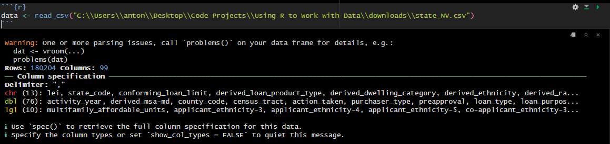
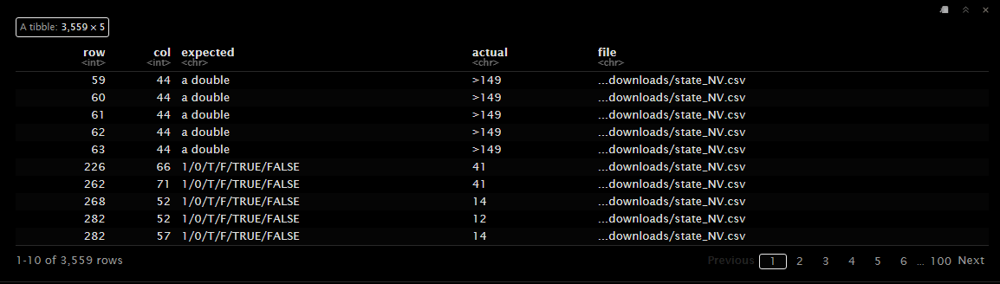

Chapter 2 Data Importing
In this chapter, we will explore the process of importing data into R for analysis. Data import is a crucial step in the data analysis workflow, as it allows you to load external data into R for further processing and analysis. We will focus on importing data from CSV files, which are one of the most common data formats used in data analysis. We will also discuss common issues encountered during data import and how to handle them, and how to handle the importation of large datasets in chunks.
2.1 Different Types of Data
In the realm of data analysis, you will encounter various types of data formats. Here are some common ones:
- Text Files: Unstructured text data that can be read line by line or in blocks, and which may be delimited by specific characters.
- CSV (Comma-Separated Values): A CSV file is a type of text file that is delimited by commas. It is one of the most common data formats used for storing tabular data.
- Excel Files: Commonly used spreadsheets saved in formats like
.xlsxor.xls. - JSON (JavaScript Object Notation): A lightweight data interchange format that is easy for humans to read and write and easy for machines to parse and generate.
- SQL Databases: Structured data stored in relational databases, which can be queried using SQL (Structured Query Language).
- API Data: Data fetched from web APIs, which often come in formats like JSON or XML.
2.1.1 Why Start with CSV Files?
We will start with CSV files for several reasons:
- Simplicity: CSV files are easy to understand and work with, making them ideal for beginners.
- Ubiquity: CSV is one of the most common data formats, widely supported by various applications and programming languages.
- Ease of Use in R: R provides straightforward functions for importing and handling CSV files, making it an excellent starting point for learning data import techniques.
By mastering the import of CSV files, you’ll build a strong foundation that will make it easier to work with other data formats as you progress in your data analysis journey.
2.2 Downloading HMDA Data in CSV Format
To practice importing CSV files in R, we will use the Home Mortgage Disclosure Act (HMDA) data in CSV format. This data can be found at the Consumer Financial Protection Bureau (CFPB) website. In particular we will be working with the Snapshot National Loan Level Dataset, specifically for that in 2022 for Nevada.
2.2.1 Snapshot National Loan Level Dataset
The Snapshot files contain the national HMDA datasets as of May 1, 2023 for all HMDA reporters, as modified by the Bureau to protect applicant and borrower privacy. The snapshot files are available to download in both .csv and pipe delimited text file formats at the following link: https://ffiec.cfpb.gov/data-publication/snapshot-national-loan-level-dataset/. One of the issues with these files however is that they are quite large, so we will be working with a subset of the data for Nevada in 2022.
The subset of the data for Nevada in 2022 can be downloaded from the following link: Nevada 2022 HMDA Data.
2.3 Importing CSV Files in R
R provides several functions for importing CSV files. The most commonly used function is read.csv(), which is part of the base R package. Additionally, the readr package offers the read_csv() function, which is optimized for faster performance and easier handling of large datasets.
2.3.1 Using read.csv()
The read.csv() function is straightforward to use. Here’s how you can import a CSV file using this function:
# Importing a CSV file using read.csv()
data <- read.csv("downloads/state_NV.csv")
# Display the first few rows of the data
head(data)In this example, replace "downloads/state_NV.csv" with the actual path to your CSV file. The head() function is used to display the first few rows of the imported data.
2.3.2 Using read_csv() from the readr Package
The readr package provides a faster and more convenient way to import CSV files with the read_csv() function. First, you need to install and load the readr package:
Once the package is installed, you can use the read_csv() function to import the CSV file:
# Load the readr package
library(readr)
# Importing a CSV file using read_csv()
data <- read_csv("downloads/state_NV.csv")
# Display the first few rows of the data
head(data,50)Similar to read.csv(), replace "downloads/state_NV.csv" with the actual path to your CSV file. The read_csv() function also automatically parses the data types of the columns, which can save you time and effort, you need to be carefull as sometimes read_csv() may guess the column type wrong!
2.3.2.1 Handling Parsing Issues
If you been following along, when you ran data <- read_csv("downloads/state_NV.csv") you have probably encountered a warning similar to:

The warning is letting us know that read_csv() ran into some parsing issues, and its recommending that we run problems() to see what the issues are. Let’s run problems() to see what the issues are:

The problems() function displays the issues encountered during parsing. The ‘row’ column indicates the row number where the issue occurred, and the ‘col’ column indicates the column number. The ‘expected’ column shows the expected data type, and the ‘actual’ column shows the actual value.
There are two main ways to handle parsing issues in read_csv():
- Manually Specify Column Types: You can manually specify the column types using the
col_typesargument inread_csv(). This approach is useful when you know the data types of the columns in advance, but might be cumbersome for large datasets with many columns. - Increase the
guess_maxArgument: You can increase theguess_maxargument inread_csv()to allow the function to guess the column types for a larger number of rows. This approach isn’t perfect, but this way you can avoid having to manually specify the column types.
Below is the code to manually specify the column types:
# Manually specify the column types
data <- read_csv(
"C:\\Users\\anton\\Desktop\\Code Projects\\Using R to Work with Data\\downloads\\state_NV.csv",
col_types = cols(
loan_amount = col_double(),
total_units = col_character(),
.default = col_character(),
),
na = c("", "NA") # This is to specify what is considered a missing value
)2.3.3 Handling File Paths
When specifying the path to your CSV file, it’s important to ensure that the path is correct. You can use absolute paths or relative paths. Here are some examples:
- Absolute Path: An absolute path specifies the complete path from the root directory. For example, on Windows:
"C:/Users/YourName/Documents/data.csv", or on macOS/Linux:"/Users/YourName/Documents/data.csv". - Relative Path: A relative path specifies the path relative to your current working directory. For example, if your current working directory is
"C:/Users/YourName/Documents", you can use"data.csv".
You can check your current working directory in R using the getwd() function:
You can also set the working directory using the setwd() function:
2.3.4 Common Issues and Solutions
- File Not Found Error: Ensure the file path is correct and the file exists at the specified location.
- Incorrect Data Parsing: If columns are not parsed correctly, you can specify the column types manually using the
col_typesargument inread_csv(). - Missing Values: R automatically handles missing values as
NA. You can customize the handling of missing values using thenaargument.
By understanding how to import CSV files in R, you can easily load your data and start your data analysis process. In the next sections, we will explore how to clean and manipulate the imported data to prepare it for analysis.
2.4 Importing Data in Chunks
When working with large datasets, it is often necessary to import the data in chunks. This is especially true when working with data that is too large to fit into memory. In this case, we can use the readr package to import the data in chunks.
The readr package provides the read_csv_chunked() function, which allows us to read a CSV file in chunks. This function is similar to read_csv(), but it reads the data in smaller chunks, making it easier to work with large datasets.
Here’s an example of how to import a CSV file in chunks using the read_csv_chunked() function applying a callback function to each chunk to filter the data for state_code “NV”:
# Load the readr package
library(readr)
# Creating callback function to filter data for state_code "NV"
filter_data <- function(data) {
data[data$state_code == "NV", ]
}
# Importing a CSV file in chunks using read_csv_chunked()
chunked_data <- read_csv_chunked("downloads/state_data.csv", callback = filter_data)In this example, replace "downloads/state_data.csv" with the actual path to your CSV file. The filter_data() function is used as a callback function to filter the data for the state code “NV”. A callback function is a function that is passed as an argument to another function and is executed by that function. In this case, the filter_data() function is applied to each chunk of data read by read_csv_chunked(). This allows us to filter the data for the state code “NV” as it is read in chunks.